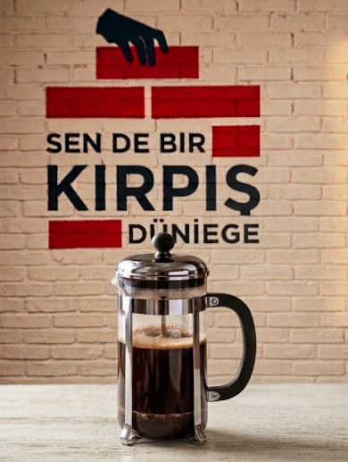
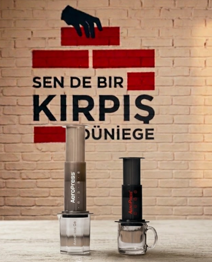

Home Brewing Guides
About Home Brewing
Home brewing is a simple way to explore different coffee flavours outside the coffee shop. The brewing method, grind size, water amount and brewing time can all change the final cup. This page introduces three common methods: V60, French Press and AeroPress.
The instructions below are general starting points for home brewing. They are not official Tokyo Coffee recipes. You can adjust the amount of coffee, water and brewing time according to your taste.
V60
The V60 is a pour-over method that can produce a clean and bright cup. It gives the brewer control over the amount and speed of water added to the coffee. A medium grind is a useful starting point.
- Place the paper filter into the V60 and rinse it with hot water.
- Add approximately 15 grams of ground coffee.
- Start with approximately 250 ml of hot water.
- Pour the water slowly and evenly over the coffee.
- Allow the water to pass through the coffee before serving.
A simple starting ratio can be written as
15 g coffee : 250 ml water.
French Press

French Press brewing uses immersion. Coffee grounds stay in contact with the water during the brewing process, which can create a fuller and heavier cup. A coarse grind is a useful starting point.
- Add approximately 18 grams of coarse-ground coffee.
- Add approximately 300 ml of hot water.
- Stir gently so that all coffee grounds become wet.
- Allow the coffee to brew for several minutes.
- Press the plunger slowly and serve the coffee.
A simple starting ratio can be written as
18 g coffee : 300 ml water.
AeroPress

AeroPress is a flexible brewing method. It can be adjusted by changing the grind size, amount of water and brewing time. A medium-fine grind is a useful starting point for a concentrated cup.
- Prepare the AeroPress and rinse the paper filter.
- Add approximately 15 grams of ground coffee.
- Add approximately 240 ml of hot water.
- Stir gently and allow the coffee to brew.
- Press slowly and carefully into a cup.
A simple starting ratio can be written as
15 g coffee : 240 ml water.
Water-to-Coffee Starting Ratios
| Method | Coffee | Water | Approximate Ratio |
|---|---|---|---|
| V60 | 15 g | 250 ml | 1:16.7 |
| French Press | 18 g | 300 ml | 1:16.7 |
| AeroPress | 15 g | 240 ml | 1:16 |
These ratios are general starting points for home brewing and are not presented as official Tokyo Coffee recipes.
Grind Size Guide
| Method | Starting Grind | Typical Result |
|---|---|---|
| V60 | Medium | Clean and balanced |
| French Press | Coarse | Full-bodied |
| AeroPress | Medium-fine | Concentrated and adjustable |
Troubleshooting
- Coffee tastes too bitter
- Try a slightly coarser grind or reduce the brewing time.
- Coffee tastes too sour
- Try a slightly finer grind or increase the brewing time.
- Coffee tastes too weak
- Try using more coffee or reducing the amount of water.
- Coffee tastes too strong
- Try using less coffee or adding more water.
Brewing Notes
Keep simple notes after each brew. This can help you understand which settings work best for your taste.
Method: V60
Coffee: 15 g
Water: 250 ml
Grind: Medium
Time: Record your brewing time
Result: Record the taste and strength after brewing.
Use Ctrl + S to save changes while editing your local HTML file.
Explore More
Tip: Change only one brewing variable at a time so you can understand its effect on the final cup.
Ask About Brewing
Have a question about your home brewing method? Use the form below.